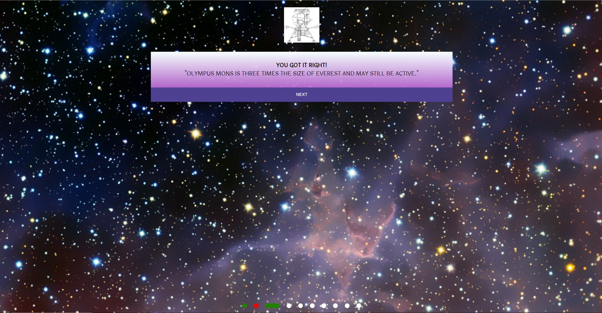
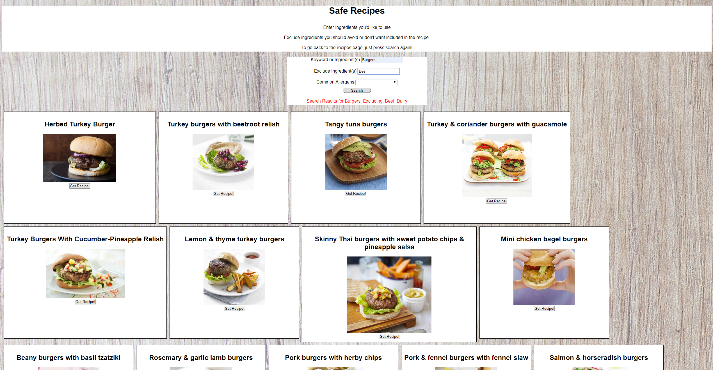

Hello, my name is Colton Jones and I am a fullstack developer specializing in jQuery, HTML5, CSS3, React.js, Node.js and PostgreSQL. Since I was young I've always had a passion for technology and how things work, and around 16 I realized my future was in web development.
I am a fullstack developer proficient in HTML, jQuery, CSS, and JS. All my life I've found lots of joy in getting to know how certain things work and seeing if I can break it down, and reverse engineer it. When I was younger my parents would get livid with me as I was always pulling apart pieces of technology around the house to figure out what was going on inside of them. I never really saw what the big deal was as I always got it all back together and working when I was done.
A few hobbies of mine include, video games, working out, hiking, and trying new things. All of these are hobbies for me because in one way or another I'm challenged mentally or physically to overcome the tough times and move forward. Video Games have taught me focus and quick, light on my feet thinking. Working out has not only physically made me stronger, but it's helped me get into a mindset that anything is achievable through pure dedication and hard work. You can't get anywhere without putting that time and effort in. Hiking is an easy and effective method I use to clear my mind on days I find myself overwhelmed with decisions or responsibility. And lastly, trying new things has forced to overcome that small fear everyone has of change. This has helped me to look at both sides of any situation and really weigh the pros and cons of both to make a well informed, conscious decision.
Space Quiz
A short, 10 question quiz I created using HTML, CSS, jQuery and JavaScript. I implemented the score tracker and question counter into one cohesive unit at the bottom of the quiz. The question you are on is represented by the widened dot, and each dot changes color to red or green depending on incorrect or correct responses respectively.
Technologies Used:
HTML, CSS, jQuery, JS
Try the Quiz!


Safe Recipes
A simple recipe site designed for people with common food allergies or intollerances that don't allow them to eat certain common ingredients. They can then exclude certain ingredients or select their food allergy from a dropdown list.
Technologies Used:
HTML, CSS, jQuery, JS
Check it out!
